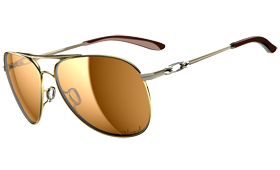

WOMEN'S SUNGLASSES
With sunglass style and fits designed exclusively for woman, fashion meets function through the lens of High Definition Optics(R). From the tried and true to everything new, we've created an entirely new dimension with Oakley Women's Sunglasses.

SPORT
With Oakley, athletes like Karena Dawn continue to make their mark on the world. And we're making our mark on them.

ACTIVE
The sunglasses in the Oakley Women's Active Sunglasees collection are for women who take fitness seriously but spend even more time in pursuit of fun
- 
LIFESTYLE
Living by their own rules is what makes women unique, and there's something for every woman in our Oakley Women's Lifestyle Sunglasses collection